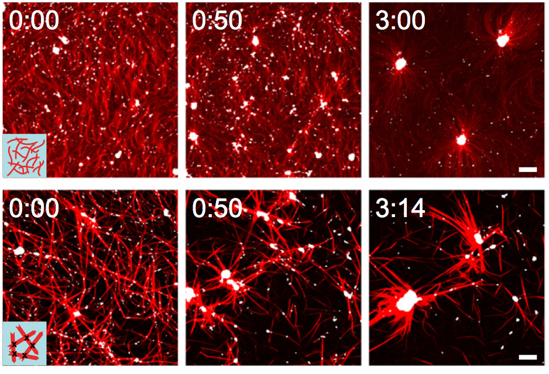
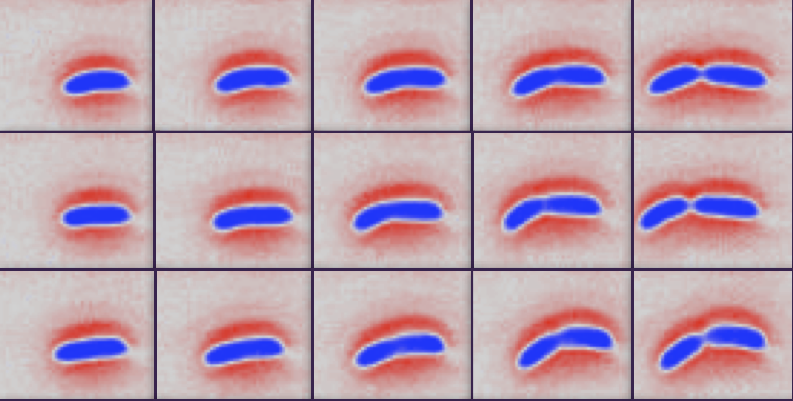

We are interested in the physics of soft living matter; in particular, understanding the mechanics and self-organizing principles of living systems across physiological length and time scales. We design and develop analytical theories and computational simulations to model biological behavior from molecular to organismic scales, in close collaboration with experimental laboratores. Our current research focuses on understanding the mechanics of the cell cytoskeleton, cell-matrix adhesion, collective cell motility, bacterial growth control and cell size regulation in microorganisms.
If you are interested in joining our group as a postdoctoral researcher, or for a PhD, MSc or MSci/BSc project please contact Shiladitya Banerjee for further information.Mailing Address:
Dr. Shiladitya Banerjee
Department of Physics and Astronomy
University College London
Gower Street
London WC1E 6BT
United Kingdom
Email: shiladitya.banerjee AT ucl.ac.uk
Phone: (+44) 020 7679 7209
Office: Room E20, Physics and Astronomy [Map]